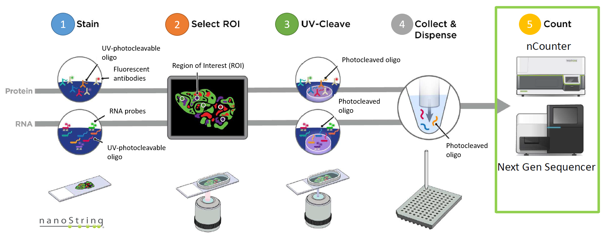
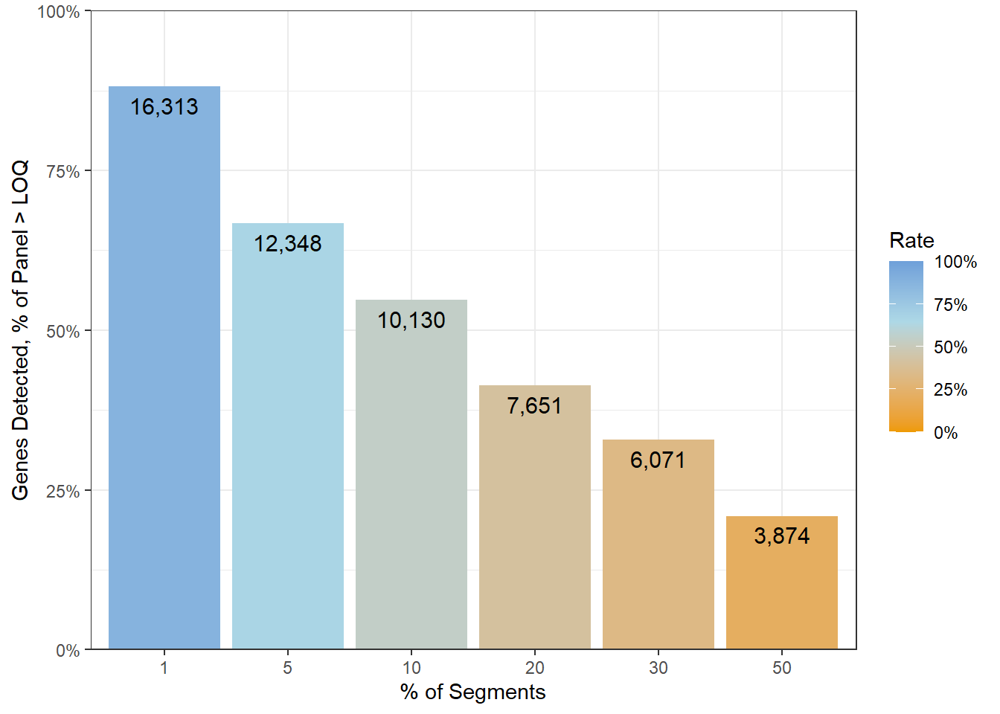
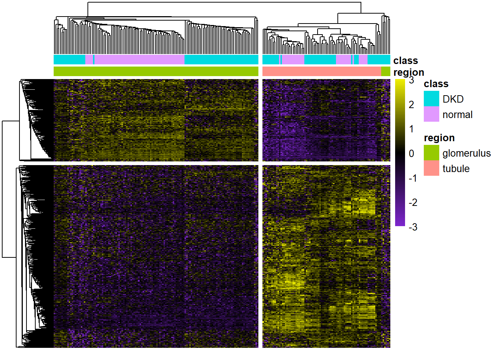

Analyzing GeoMx-NGS RNA Expression Data with GeomxTools
Jason Reeves, Prajan Divakar, Nicole Ortogero, Maddy Griswold, Zhi Yang, Stephanie Zimmerman, Rona Vitancol and David Henderson
Overview of GeoMx-NGS Workflow
Overview of the Dataset
- We will analyze a GeoMx kidney dataset created with the human whole transcriptome atlas (WTA) assay. The dataset includes 4 diabetic kidney disease (DKD) and 3 healthy kidney tissue samples.
Overview of the Dataset
The key data files are:
DCCs files - expression count data and sequencing quality metadata
PKCs file(s) - probe assay metadata describing the gene targets present in the data
Annotation file - useful tissue information, including the type of segment profiled (ex: glomerulus vs. tubule), segment area/nuclei count, and other tissue characteristics (ex: diseased vs. healthy).
Overview of the Dataset

Overview of the Analysis Methods

Overview of the Tools
Take Home Highlights
- QC & Pre-processing and Normalization
- Unsupervised Analysis
- UMAP & t-SNE plots
- Clustering high coefficient of variation (CV) genes (heatmap)
- Visualizing Differential Expression
- Volcano Plot
- MA plot
- heatmap
Selected Interesting Results
QC & Pre-processing
col_by <- "segment"
# Graphical summaries of QC statistics plot function
QC_histogram <- function(assay_data = NULL,
annotation = NULL,
fill_by = NULL,
thr = NULL,
scale_trans = NULL) {
plt <- ggplot(assay_data,
aes_string(x = paste0("unlist(`", annotation, "`)"),
fill = fill_by)) +
geom_histogram(bins = 50) +
geom_vline(xintercept = thr, lty = "dashed", color = "black") +
theme_bw() + guides(fill = "none") +
facet_wrap(as.formula(paste("~", fill_by)), nrow = 4) +
labs(x = annotation, y = "Segments, #", title = annotation)
if(!is.null(scale_trans)) {
plt <- plt +
scale_x_continuous(trans = scale_trans)
}
plt
}QC & Pre-processing

QC & Pre-processing
# Plot detection rate:
plot_detect <- data.frame(Freq = c(1, 5, 10, 20, 30, 50))
plot_detect$Number <-
unlist(lapply(c(0.01, 0.05, 0.1, 0.2, 0.3, 0.5),
function(x) {sum(fData(target_demoData)$DetectionRate >= x)}))
plot_detect$Rate <- plot_detect$Number / nrow(fData(target_demoData))
rownames(plot_detect) <- plot_detect$Freq
ggplot(plot_detect, aes(x = as.factor(Freq), y = Rate, fill = Rate)) +
geom_bar(stat = "identity") +
geom_text(aes(label = formatC(Number, format = "d", big.mark = ",")),
vjust = 1.6, color = "black", size = 4) +
scale_fill_gradient2(low = "orange2", mid = "lightblue",
high = "dodgerblue3", midpoint = 0.65,
limits = c(0,1),
labels = scales::percent) +
theme_bw() +
scale_y_continuous(labels = scales::percent, limits = c(0,1),
expand = expansion(mult = c(0, 0))) +
labs(x = "% of Segments",
y = "Genes Detected, % of Panel > LOQ")QC & Pre-processing
Normalization
library(reshape2) # for melt
library(cowplot) # for plot_grid
# Graph Q3 value vs negGeoMean of Negatives
ann_of_interest <- "region"
Stat_data <-
data.frame(row.names = colnames(exprs(target_demoData)),
Segment = colnames(exprs(target_demoData)),
Annotation = pData(target_demoData)[, ann_of_interest],
Q3 = unlist(apply(exprs(target_demoData), 2,
quantile, 0.75, na.rm = TRUE)),
NegProbe = exprs(target_demoData)[neg_probes, ])
Stat_data_m <- melt(Stat_data, measure.vars = c("Q3", "NegProbe"),
variable.name = "Statistic", value.name = "Value")
plt1 <- ggplot(Stat_data_m,
aes(x = Value, fill = Statistic)) +
geom_histogram(bins = 40) + theme_bw() +
scale_x_continuous(trans = "log2") +
facet_wrap(~Annotation, nrow = 1) +
scale_fill_brewer(palette = 3, type = "qual") +
labs(x = "Counts", y = "Segments, #")
plt2 <- ggplot(Stat_data,
aes(x = NegProbe, y = Q3, color = Annotation)) +
geom_abline(intercept = 0, slope = 1, lty = "dashed", color = "darkgray") +
geom_point() + guides(color = "none") + theme_bw() +
scale_x_continuous(trans = "log2") +
scale_y_continuous(trans = "log2") +
theme(aspect.ratio = 1) +
labs(x = "Negative Probe GeoMean, Counts", y = "Q3 Value, Counts")
plt3 <- ggplot(Stat_data,
aes(x = NegProbe, y = Q3 / NegProbe, color = Annotation)) +
geom_hline(yintercept = 1, lty = "dashed", color = "darkgray") +
geom_point() + theme_bw() +
scale_x_continuous(trans = "log2") +
scale_y_continuous(trans = "log2") +
theme(aspect.ratio = 1) +
labs(x = "Negative Probe GeoMean, Counts", y = "Q3/NegProbe Value, Counts")
btm_row <- plot_grid(plt2, plt3, nrow = 1, labels = c("B", ""),
rel_widths = c(0.43,0.57))
plot_grid(plt1, btm_row, ncol = 1, labels = c("A", ""))Normalization 

Normalization
# visualize the first 10 segments with each normalization method
boxplot(exprs(target_demoData)[,1:10],
col = "#9EDAE5", main = "Raw Counts",
log = "y", names = 1:10, xlab = "Segment",
ylab = "Counts, Raw")
Normalization
boxplot(assayDataElement(target_demoData[,1:10], elt = "q_norm"),
col = "#2CA02C", main = "Q3 Norm Counts",
log = "y", names = 1:10, xlab = "Segment",
ylab = "Counts, Q3 Normalized")
Normalization
boxplot(assayDataElement(target_demoData[,1:10], elt = "neg_norm"),
col = "#FF7F0E", main = "Neg Norm Counts",
log = "y", names = 1:10, xlab = "Segment",
ylab = "Counts, Neg. Normalized")
Unsupervised Analysis and UMAP & t-SNE Plots
library(umap)
library(Rtsne)
# update defaults for umap to contain a stable random_state (seed)
custom_umap <- umap::umap.defaults
custom_umap$random_state <- 42
# run UMAP
umap_out <-
umap(t(log2(assayDataElement(target_demoData , elt = "q_norm"))),
config = custom_umap)
pData(target_demoData)[, c("UMAP1", "UMAP2")] <- umap_out$layout[, c(1,2)]
ggplot(pData(target_demoData),
aes(x = UMAP1, y = UMAP2, color = region, shape = class)) +
geom_point(size = 3) +
theme_bw()Unsupervised Analysis and UMAP & t-SNE Plots

Unsupervised Analysis and UMAP & t-SNE Plots
# run tSNE
set.seed(42) # set the seed for tSNE as well
tsne_out <-
Rtsne(t(log2(assayDataElement(target_demoData , elt = "q_norm"))),
perplexity = ncol(target_demoData)*.15)
pData(target_demoData)[, c("tSNE1", "tSNE2")] <- tsne_out$Y[, c(1,2)]
ggplot(pData(target_demoData),
aes(x = tSNE1, y = tSNE2, color = region, shape = class)) +
geom_point(size = 3) +
theme_bw()Unsupervised Analysis and UMAP & t-SNE Plots

Clustering High CV Genes with Heatmap
library(pheatmap) # for pheatmap
# create a log2 transform of the data for analysis
assayDataElement(object = target_demoData, elt = "log_q") <-
assayDataApply(target_demoData, 2, FUN = log, base = 2, elt = "q_norm")
# create CV function
calc_CV <- function(x) {sd(x) / mean(x)}
CV_dat <- assayDataApply(target_demoData,
elt = "log_q", MARGIN = 1, calc_CV)
# show the highest CD genes and their CV values
sort(CV_dat, decreasing = TRUE)[1:5]
#> CAMK2N1 AKR1C1 AQP2 GDF15 REN
#> 0.5886006 0.5114973 0.4607206 0.4196469 0.4193216
# Identify genes in the top 3rd of the CV values
GOI <- names(CV_dat)[CV_dat > quantile(CV_dat, 0.8)]
pheatmap(assayDataElement(target_demoData[GOI, ], elt = "log_q"),
scale = "row",
show_rownames = FALSE, show_colnames = FALSE,
border_color = NA,
clustering_method = "average",
clustering_distance_rows = "correlation",
clustering_distance_cols = "correlation",
breaks = seq(-3, 3, 0.05),
color = colorRampPalette(c("purple3", "black", "yellow2"))(120),
annotation_col =
pData(target_demoData)[, c("class", "segment", "region")])Clustering High CV Genes with Heatmap

Visualizing DE Genes with Volcano Plot
library(ggrepel)
# Categorize Results based on P-value & FDR for plotting
results$Color <- "NS or FC < 0.5"
results$Color[results$`Pr(>|t|)` < 0.05] <- "P < 0.05"
results$Color[results$FDR < 0.05] <- "FDR < 0.05"
results$Color[results$FDR < 0.001] <- "FDR < 0.001"
results$Color[abs(results$Estimate) < 0.5] <- "NS or FC < 0.5"
results$Color <- factor(results$Color,
levels = c("NS or FC < 0.5", "P < 0.05",
"FDR < 0.05", "FDR < 0.001"))
# pick top genes for either side of volcano to label
# order genes for convenience:
results$invert_P <- (-log10(results$`Pr(>|t|)`)) * sign(results$Estimate)
top_g <- c()
for(cond in c("DKD", "normal")) {
ind <- results$Subset == cond
top_g <- c(top_g,
results[ind, 'Gene'][
order(results[ind, 'invert_P'], decreasing = TRUE)[1:15]],
results[ind, 'Gene'][
order(results[ind, 'invert_P'], decreasing = FALSE)[1:15]])
}
top_g <- unique(top_g)
results <- results[, -1*ncol(results)] # remove invert_P from matrix
# Graph results
ggplot(results,
aes(x = Estimate, y = -log10(`Pr(>|t|)`),
color = Color, label = Gene)) +
geom_vline(xintercept = c(0.5, -0.5), lty = "dashed") +
geom_hline(yintercept = -log10(0.05), lty = "dashed") +
geom_point() +
labs(x = "Enriched in Tubules <- log2(FC) -> Enriched in Glomeruli",
y = "Significance, -log10(P)",
color = "Significance") +
scale_color_manual(values = c(`FDR < 0.001` = "dodgerblue",
`FDR < 0.05` = "lightblue",
`P < 0.05` = "orange2",
`NS or FC < 0.5` = "gray"),
guide = guide_legend(override.aes = list(size = 4))) +
scale_y_continuous(expand = expansion(mult = c(0,0.05))) +
geom_text_repel(data = subset(results, Gene %in% top_g & FDR < 0.001),
size = 4, point.padding = 0.15, color = "black",
min.segment.length = .1, box.padding = .2, lwd = 2,
max.overlaps = 50) +
theme_bw(base_size = 16) +
theme(legend.position = "bottom") +
facet_wrap(~Subset, scales = "free_y")Visualizing DE Genes with Volcano Plot

Visualizing DE Genes with MA Plot
results$MeanExp <-
rowMeans(assayDataElement(target_demoData,
elt = "q_norm"))
top_g2 <- results$Gene[results$Gene %in% top_g &
results$FDR < 0.001 &
abs(results$Estimate) > .5 &
results$MeanExp > quantile(results$MeanExp, 0.9)]
ggplot(subset(results, !Gene %in% neg_probes),
aes(x = MeanExp, y = Estimate,
size = -log10(`Pr(>|t|)`),
color = Color, label = Gene)) +
geom_hline(yintercept = c(0.5, -0.5), lty = "dashed") +
scale_x_continuous(trans = "log2") +
geom_point(alpha = 0.5) +
labs(y = "Enriched in Glomeruli <- log2(FC) -> Enriched in Tubules",
x = "Mean Expression",
color = "Significance") +
scale_color_manual(values = c(`FDR < 0.001` = "dodgerblue",
`FDR < 0.05` = "lightblue",
`P < 0.05` = "orange2",
`NS or FC < 0.5` = "gray")) +
geom_text_repel(data = subset(results, Gene %in% top_g2),
size = 4, point.padding = 0.15, color = "black",
min.segment.length = .1, box.padding = .2, lwd = 2) +
theme_bw(base_size = 16) +
facet_wrap(~Subset, nrow = 2, ncol = 1)Visualizing DE Genes with MA Plot
Visualizing DE Genes with Heatmap
# select top significant genes based on significance, plot with pheatmap
GOI <- unique(subset(results, `FDR` < 0.001)$Gene)
pheatmap(log2(assayDataElement(target_demoData[GOI, ], elt = "q_norm")),
scale = "row",
show_rownames = FALSE, show_colnames = FALSE,
border_color = NA,
clustering_method = "average",
clustering_distance_rows = "correlation",
clustering_distance_cols = "correlation",
cutree_cols = 2, cutree_rows = 2,
breaks = seq(-3, 3, 0.05),
color = colorRampPalette(c("purple3", "black", "yellow2"))(120),
annotation_col = pData(target_demoData)[, c("region", "class")])Visualizing DE Genes with Heatmap
Conclusion
Learned Insteresting Skills
- How to plot UMAP & t-SNE Plots
- How to plot volcano plot and MA plot
- How to plot heatmap using pheat packages
- QC & processing and normalization
Challeges
- Install the Packages (Enviorment)
- Load the Data
- Understand the object and related functions from the packages
- QC & preprocessing